제1장 연구 배경 및 목적
1.1 연구 배경
글로벌 경제의 중심을 이루는 제조업은 한국을 포함한 다양한 국가에서 중요한 산업 중 하나로 인식되고 있다. 그러나 최근 조사된 자료에 따르면, 제조업 영업 이익률은 한국을 중심으로 약 5% 수준이며, 이는 세계 기준에서는 약 9%에 달한다. 특히, 반도체를 제외한 주요 제조업 분야에서는 매출 대비 순이익이 낮은 수준을 보이고 있어, 자체 투자를 통한 성장의 한계가 존재하고 있는 실정이다.
이러한 어려움에 더해, 금리 인상 및 전염병으로 인한 팬데믹과 같은 외부 위기 상황이 발생할 경우, 기업은 존속에 대한 위협과 함께 산업 자체의 경쟁력을 잃을 수 있는 위험에 직면하고 있다. 따라서 이러한 상황에서 재무적으로 탄탄한 기업들의 혁신 사례를 분석하여 시사점을 도출하는 것은 중요한 과제로 여겨진다.
<그림 1> 주요 제조업 영업 이익률 비교
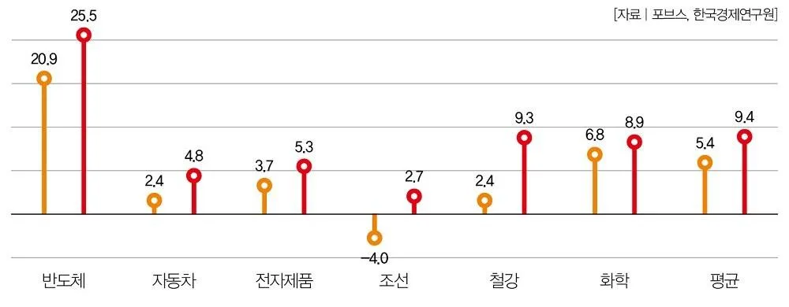
이 연구는 글로벌 바이오 플랫폼 기업 중 하나인 할로자임의 사례를 중점적으로 다루고자 한다. 할로자임은 2021년 기준으로 영업 이익률이 90%에 이를 만큼 뛰어난 기업으로 평가받고 있다. 이를 통해 해당 기업의 혁신 사례를 분석하고, 이로부터 다른 산업군의 기업들이 얻을 수 있는 혁신의 방향성을 도출하고자 한다.
따라서 본 연구는 연구의 방향성은 할로자임의 핵심역량을 명확히 도출하고, 이를 기반으로 한 혁신전략을 분석하여 타 산업에도 적용할 수 있는 시사점을 도출하는 데에 집중될 것이다. 글로벌 경제의 어려운 상황 속에서도 혁신적으로 성장하고 있는 기업의 사례 연구를 통해, 다른 기업들이 채택할 수 있는 혁신전략의 시사점을 제시하고, 글로벌 경제 환경에서의 기업의 생존과 성장을 지원하는데 기여할 것으로 기대한다.
1.2 연구 기업 소개: 할로자임 테라퓨틱스 (이하 할로자임)
할로자임은 골드만 삭스가 발표한 2022 금리 인상을 견딜 수 있는 “고성장” “고수익” 상장 기업 중 1위에 선정된 기업이다.
<그림 2> 할로자임 사명 및 나스닥 주가 차트
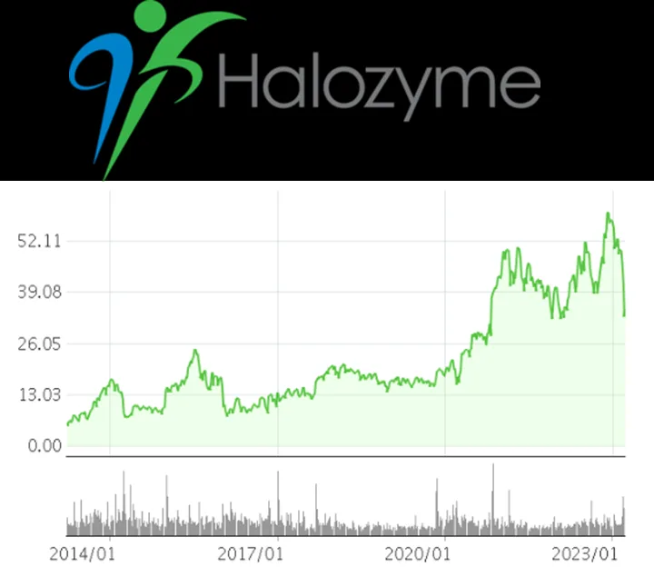
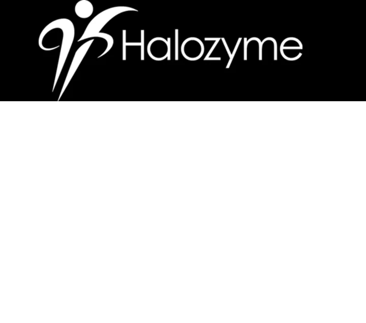
할로자임의 설립 년도는 1998년이며, 그로부터 6년 뒤인 2004년 나스닥 상장 이후 지속적으로 성장하고 있는 기업이다. 본사는 미국 캘리포니아 샌디에고에 위치하고 있으며 주요 사업 분야는 “바이오 플랫폼”이다. 시가 총액은 2023년 기준 약 6조 5천억이며 그에 비해 직원수는 약 140명으로 적은 인적 자원으로 최대의 아웃풋을 내고 있는 기업이다. 골드만삭스의 2023년 할로자임 예상 마진은 약 63%이다.
<그림 3> 할로자임 주요 손익 변동표
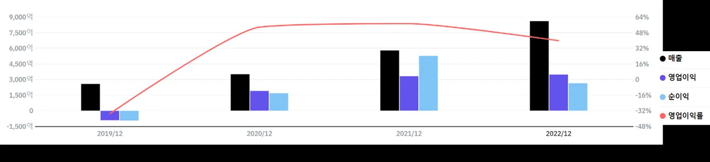
할로자임의 기업 가치는 주요 손익 변동 차트를 보면 확실하게 드러나는데, 매출의 성장세와 순이익의 비중을 보면 놀라운 결과를 보인다. 할로자임의 매출은 2019년 대비 3년간 약 3배가 상승하였으며 3년 매출 성장률 평균 30%에 임박한다. 또한 2022년 기준 총 매출은 약 8,300억이며 그중 로열티 수입은 약 4,500억이다. 매출 대비 순이익 비율은 2021년 기준 약 90%이며, 2022년 기준 약 40%이다. 2023년 3분기 기준 예상 매출 약 1조이며 그 중 로열티 수입은 약 5,600억이다. 2022년 대비해서도 매출 25~28% 수준 성장하였고 로열티 수익 즉 순수익은 23-26% 증가하는 급격한 성장 추세를 보이고 있다. 동일 및 타 산업군의 주요 글로벌 리딩 기업들 대비 독보적으로 높은 수준의 순이익 비중을 보이며 혁신적인 재무적인 성과를 이루고 있는 기업이다. 그렇다면 할로자임이 가진 혁신적인 성과가 지속 가능한 것인지를 분석하기 위하여, 선도한 바이오 플랫폼 산업은 어떤 것인지를 소개하고, 할로자임이 속한 바이오 의약품 및 주요 제품군인 히알루로니다제 시장의 현황 및 성장 추세까지 확인하고자 한다.
1.3 바이오 플랫폼 산업 소개
플랫폼이란 단어는 ‘Plat(구획된 땅)’과 ‘Form(형태)’의 합성어로 ‘구획된 땅의 형태’를 의미한다. ‘용도에 따라 다양한 형태로 활용될 수 있는 공간’을 상징적으로 표현한 단어로서 다각적인 산업에서 활용되는 단어이다. 그 중에서도 바이오 플랫폼이란, 기존 의약품에 적용하여 단백질 타깃 물질들을 바꾸어 다수의 다양한 후보 물질을 도출할 수 있는 기반 기술을 의미한다.
<그림 4> 바이오 플랫폼 예시
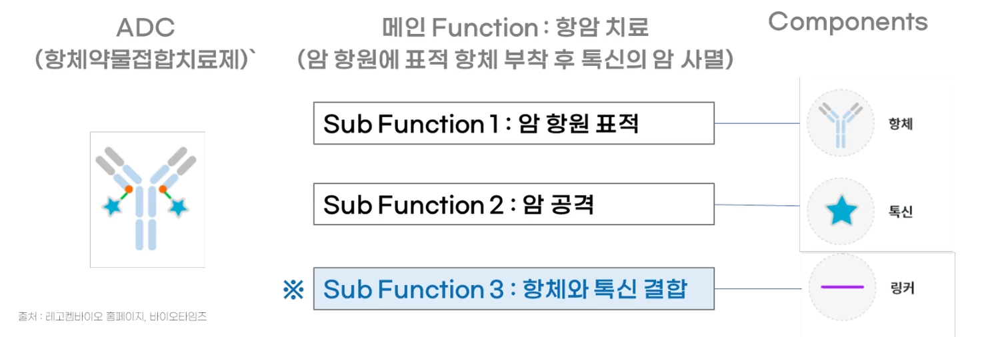
아키텍처 이론을 기반으로 해석하면, 제품 기능과 구성 요소간 일대일 대응 관계인 모듈러 아키텍처의 형태로 약품의 Sub function을 구현해줄 구성요소(Tool)로써의 역할을 한다고 볼 수 있다. ADC(항체약물접합치료제)를 예시로 보면, 구성 요소 중 링커가 이런 바이오 플랫폼의 역할을 한다. 항체와 톡신을 결합시키는 기능을 가지며 여러가지의 약물에 접합하여 같은 역할을 하며 확장성을 가진다.
바이오 플랫폼 산업은 할로자임이 최초로 형성하고 성장시킨 시장으로, 바이오제약 기술을 모듈형 플랫폼의 형태로 판매하는 사업군을 의미한다. 타 의약품에 플랫폼 형태로 결합하여 다수의 후보 물질을 도출할 수 있도록 지원하는 역할을 한다. 기존의 빅 파마들의 경우, 베스트 셀러 약품들에 적합한 바이오 플랫폼을 접목시키면 기존 의약 효과에 추가적인 시너지 효과를 가지면서 적은 비용과 리스크로 새로운 바이오 의약품을 개발할 수 있다는 효용을 제공한다. 따라서 “바이오 플랫폼”을 이용한 비즈니스는 최근 바이오 산업에서 가장 주요하게 각광받고 있는 산업 분야라고 할 수 있다.
<그림 5> 의약품 분류
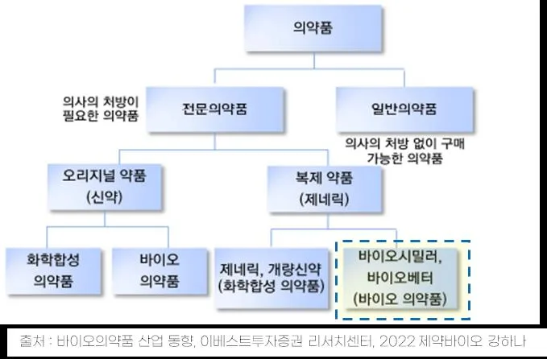
1.4 바이오 의약품 시장 현황
바이오 의약품은 의약품 중에서도 의사의 처방이 필요한 “전문의약품”에 해당하며, 주로 오리지널 약품의 복제 약품인 제네릭 중에서도 기능이 유사하거나 더 개선된 바이오시밀러, 바이오베터를 포함하는 개념이다. 따라서 근본적인 원인 치료 목적으로 제조되므로 합성 의약품 대비 약효가 우수하며 부작용이 적다. 또한 임상 1상부터 신약 승인까지의 성공율이 높은 편이다. (바이오 의약품 평균 12%, 합성의약품 평균 6%)
2000년대 전후로 개발된 신약 특허 만료되고 있으므로 바이오 의약품 개발 시도 증가하고 있는 추세이며 글로벌 바이오 의약품 시장은 최근 5년 연평균 성장률 13-17% 수준으로 지속적인 성장세를 보이고 있다. 미국/유럽 기준 바이오 의약품 시장 점유율 약 30% 이상으로 성장하였으며 2023년 기준 글로벌 시장 규모는 3.5조 달러에 육박한다.
<그림 6> 글로벌 의약품 시장 추이
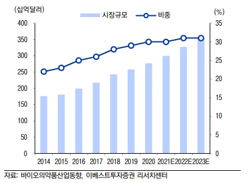
<그림 7> 글로벌 주요 생물 의약품 현황~2015년
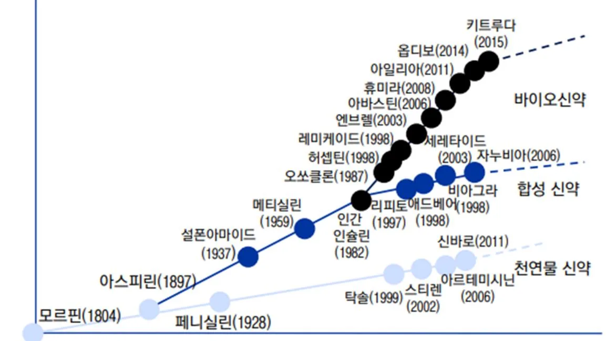
2015년까지의 주요 의약품 현황을 살펴보면, 천연/합성 신약 대비하여 효능이 높고 부작용이 적은 바이오 신약들의 개발이 주를 이루고 있는 것을 알 수 있다. 그리고 해당 바이오 신약들을 기준으로 앞서 언급한 “바이오 플랫폼”을 접목하면 또 다른 신규 의약품이 탄생한다.
1.5 히알루로니다제 시장 현황
할로자임의 대표적인 제품군인 ENHANZE(인핸즈 동일)는 히알루로니다제이다. 히알루로니다제란, 인간의 피부 조직을 이루는 구성 요소 중 히알루론산의 점성을 감소시켜, 조직의 투과성을 증대시켜 주는 효소이다. 히알루로니다제 시장 규모는 연평균 약 9%씩 성장하고 있다. 인간 히알루로니다제 기준 2018년 6천억 시장 규모에서 2027년 기준 약 1.5조 시장 성장 예상된다. 히알루로니다제를 다루는 글로벌 2개 기업 중 독보적 시장 점유율을 가진 글로벌 Top 1 기업은 미국 기업인 할로자임이다.
<그림 8> 히알루로니다제 시장 전망
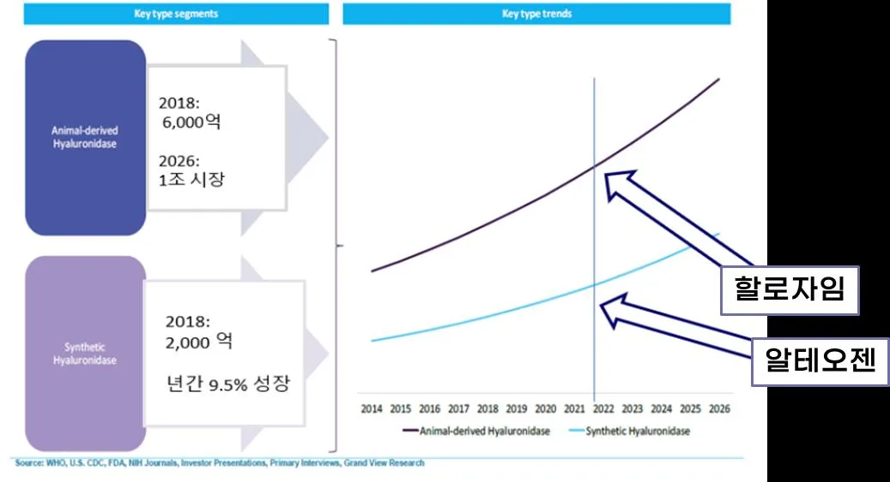
할로자임은 최초로 히알루로니다제 바이오 플랫폼 기술을 개발한 기업으로서 동물 히알루로니다제의 2026년 시장 전망은 1조 이상이다. 그 후로 유일하게 할로자임의 히알루로니다제 독점 시장에 진출한 기업은 한국 기업인 알테오젠이며, 알테오젠이 개발한 인간 히알루로니다제 시장은 2018년 2천억 규모 이후 연간 9.5%씩 성장하고 있다.
본 연구에서는 바이오 의약품 시장을 이끌고 있는 바이오 플랫폼 산업의 선두주자이자, 히알루로니다제 시장의 최초 개척자이자 독보적인 지위와 재무적 성과를 가지고 있는 글로벌 혁신 기업인 할로자임의 혁신 사례에 대해 연구하고자 한다.
할로자임 테라퓨틱스의 독보적인 글로벌 시장 지위와 높은 수준의 순이익율에 가치를 두어, 다음과 같은 Research Question을 통해 해당 연구를 추진하고 연구 결과를 도출하고자 한다.
Research Question 1, 할로자임 테라퓨틱스는 어떤 핵심 역량과 혁신 전략으로 글로벌 1위의 고성장 초수익 기업이 되었는가? 할로자임의 혁신 및 비즈니스 전략 중심으로 분석한다.
Research Question 2, 할로자임 테라퓨틱스의 혁신 사례를 통해 얻은 시사점을 바탕으로 우리나라 제조업 외 타 산업군에 적용할 수 있는 시사점은 무엇이 있는가?
<그림 9> 핵심 역량 3가지 요소
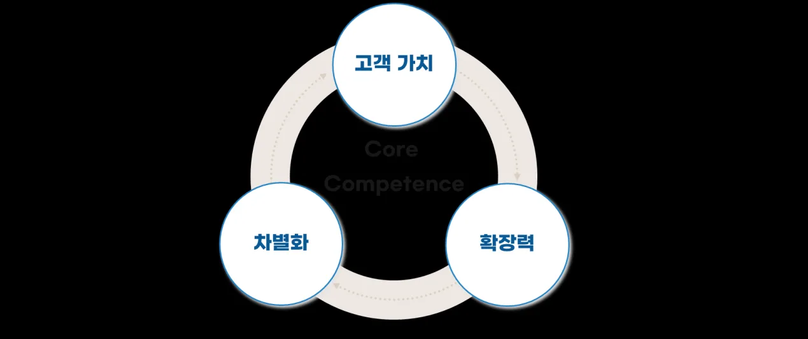
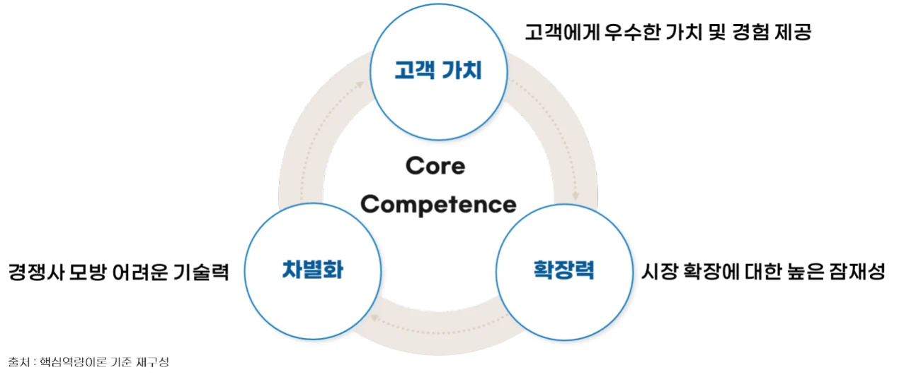
2.1 이론적 배경: 핵심 역량 이론
핵심 역량 이론에 따르면 기업의 근간이 되는 “핵심 역량”이라고 하기 위해서는 고객에게 우수한 가치 및 경험을 제공하는 “고객 가치”, 경쟁사에서 모방이 어려운 기술력인 “차별성” 그리고 시장을 추가적으로 넓힐 수 있는 높은 잠재성을 가진 “확장성” 3가지 조건을 만족하여야 한다.
해당 이론을 검토 기준으로 적용하여, 할로자임 기업 활동의 근간이 되었던 역량 중 고객 가치, 차별화, 확장력 측면에서 모두 만족하며 향후 시장 니즈에 가장 필요한 역량을 도출 및 평가하고자 한다.
2.2 핵심 역량 (1) 글로벌 최고 수준의 바이오 공학 기술
2.2.1 체내 단백질 추출 및 결합 기술력
할로자임의 사업 영역은 주로 약물을 운반하는 플랫폼 상품으로 구성되어 있으며, 그 영역 안에 할로자임의 대표 상품인 ENHANZE (이하 인핸즈)가 있다. 인핸즈는 히알루로니다제에 해당하는데 피부 체내의 히알루론산(HA, 천연 당의 사슬로 이루어진 글리코사미노글리칸)을 분해하는 단백질 Hyal1과 PH20의 일부를 각기 잘라 붙여 하나의 물질로 결합한 물질을 의미한다. 할로자임은 자체 재조합한 히알루로니다제를 활용하여 피부 조직 중 “히알루론산”을 녹여, 주사기로 투약이 가능한 “SC 제형”의 약물이 통과가 가능한 빈 공간을 만들어줌으로써 약물을 체내에 적절한 농도와 속도로 전달해주는 “약물 전달 플랫폼”으로서의 기능을 수행한다. 자세히 설명하자면, 하단부 좌측의 그림은 인체 피부 조직 내의 구성 요소들을 보여준다. 인체의 피부 조직은 상피 조직을 시작으로 기저판, 섬유질, 모세 혈관, 히알루론산 등으로 구성되어 있는데 이중에서 히알루론산은 물과 같은 물질로 충격을 흡수하는 역할을 하며 피부 조직 바탕을 채운다. 상단 우측의 그림은 인핸즈의 기능을 나타내는데, 인핸즈는 피부 조직 중 “히알루론산”을 녹여 SC 제형으로도 통과가 가능한 빈 공간을 만들어 주는 기능을 가지고 있다. 따라서 기존 항체치료제 약물이 히알루론산을 통과할 수 있도록 해주며, 약물이 체내에 적절한 농도 및 속도로 전달할 수 있는 “플랫폼” 역할을 수행한다.
<그림 10> 인체 피부 조직 구성 <그림 11> 인핸즈 기능
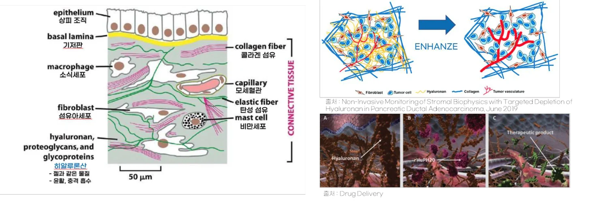
<그림 12> 히알루로니다제 기술
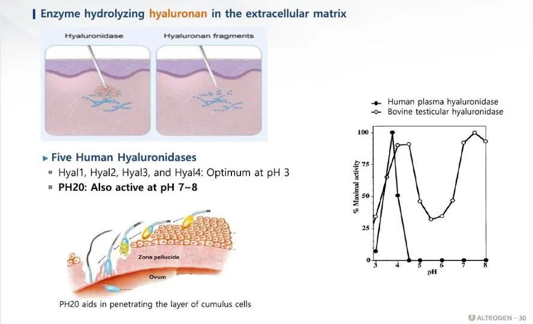
히알루로니다제 종류 중 Hyal 1,2,3,4의 경우는 산성 농도 PH 3에서 생존이 가능하나 PH20의 경우에는 산성 농도 PH 7~8까지도 생존이 가능하다. 건강한 피부의 농도가 보통 4.5~5.5이므로 Hyal 1,2,3,4는 생존하지 못하고 PH20은 피부를 통과하여 체내에 흡수될 수 있는 공간을 만들어준다.
인핸즈의 기술은 해당 사실에 기반하여 몸 속에서 히알루론산을 분해하는 단백질 Hyal1과 PH20을 각기 잘라 붙여 만드는 원리이다. 하지만 작은 단백질 분자의 도메인들을 자르고 서로 연결하는 기술은 매우 어려우며 “단백질 공학의 최고 난이도＂기술이라고 평가받는다.
<그림 13> 인핸즈 기술 원리
출처: 알테오젠 IR 자료
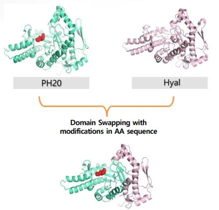
따라서 할로자임이 1998년에 설립과 함께 해당 기술을 소개한 이래로 2004년 최초로 학술지에 등재하고, 2013년 이후 글로벌 최초로 상용화한 이후 2019년 알테오젠이 해당 기술을 국내 특허 출원하기까지 글로벌 경쟁사 없이 독점적으로 시장을 운영할 수 있었다. 글로벌 빅파마들의 경우에도 해당 기술을 신규로 개발하는 시간과 금전적 노력 보다는 할로자임과의 로열티 계약 체결이 더욱 유리하므로 할로자임의 시장 지위가 유지되었다.
<그림 14> 할로자임 인핸즈 결합 방식 예시
출처: 이미지 각 제약사 및 할로자임 사이트 참고
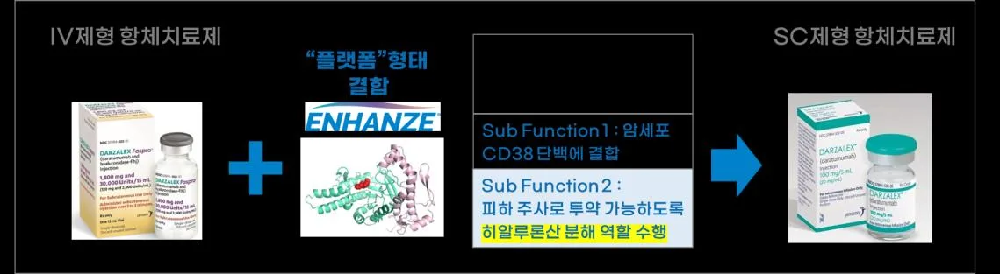
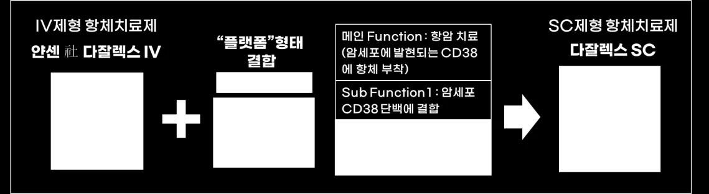
2.2.2 기존 약물과 정교하게 결합하는 플랫폼 기술 역량
할로자임이 ENHANZE를 주요 제품으로 판매할 수 있는 바탕은 기존 약물에 정교하게 결합하는 바이오 플랫폼 기술 역량에 있다. 할로자임의 ENHANZE는 주로 정맥주사(IV) 제형에서 피하주사로의(SC) 제형 변경이 가능하도록 하는 역할을 수행한다. 일반적인 항체 치료제의 경우, 분자량이 150kDA 이상으로 크기가 크기 때문에 피하주사 시에는 히알루론산을 통과할 수 없는 문제가 있습니다.
그러나 ruPH20이라
불리는 ENHANZE의 Subfunction(히알루론산 분해)을 추가함으로써, 이러한 제약을 극복하고 SC 제형으로의 변경이 가능해졌다. 이처럼 할로자임은 기존 약물에 ENHANZE를 정교하게 결합하는 고난이도의 바이오 공학 기술을 기반으로 기존 항체 치료제의 메인 기능을 지키면서, Sub 기능을 가진 플랫폼으로써 고객 가치를 향상시키는 데 기여한다. 환자들에게 불편한 정맥주사를 피하하며, 피하주사로 투여함으로써 치료의 편의성을 높이고, 치료 효과를 극대화할 수 있는 혁신적인 접근을 제공한다.
<그림 15> 할로자임 제형 변경을 통한 투약 효과 비교 예시
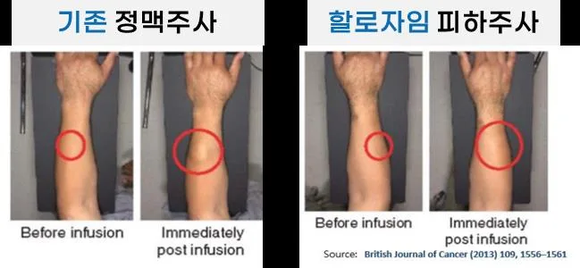
2.2.3 핵심 역량 (1) 종합: 할로자임 핵심 역량으로서 가치
핵심 역량으로써 종합 평가를 위하여 할로자임의 인핸즈 기술이 접목된 제품을 실제로 사용하는 최종 고객들이 느끼는 가치에 대해서 평가하고자 한다. 인핸즈 기술의 경우, 최종 고객은 약품을 투여하는 환자들이다. 먼저 편의성의 관점에서 보았을 때, 기존 항체치료 항체치료제와 같은 바이오 의약품은 대부분 정맥주사로 개발되며, 투여하는 데 최소 1시간에서 최대 20시간까지 소요되나 인핸즈 기술을 통해 피하주사로 제형을 변경하여 5분 내외 투여가 가능하도록 하는 독보적인 편의성을 제공한다. 또한 비용적인 관점에서 고객 가치를 평가한다면 기존에는 장시간 투약을 위해 별도로 병원에 입원하는 비용 포함 추가적인 의료 비용이 과다 발생하였으나, 인핸즈를 통해 자가에서도 스스로 투약이 가능하도록 하기 때문에 최소의 의약품 비용만으로 치료를 할 수 있다는 강점을 가진다.
2.3 핵심 역량 (2) 바이오 플랫폼 분야 독보적 특허 지식과 노하우
핵심 역량이 가치를 가지기 위해서는 경쟁사에서 모방이 어려운 특성을 가져야 한다. 할로자임의 히알루로니다제 PH20 (인핸즈 기술 기반)의 경우 단백질 공학의 최고 난이도 기술이며, 세계 최초로 개발한 이후 경쟁사들이 추가적으로 시장에 뛰어들지 못할 만큼 독보적인 기술력을 요구한다. 할로자임은 기술력의 난이도에 더불어서 히알루로니다제 플랫폼 관련 독보적인 특허 지식과 협업 개발 노하우를 기반으로 하여 강력한 기술 특허 장벽을 세움으로서 경쟁사들의 진입을 원천적으로 차단하고 고객들로 하여금 할로자임을 1순위로 고려하도록 한다. 할로자임이 출원한 특허 수는 478여개로, 이 중에서 ruPH20 (인간히알루로니다아제) 관련한 특허가 다수를 차지한다. 할로자임은 바이오 특성을 고려하여 특허의 종류도 제조, 용도, 제형 등 타입에 따른 추가적인 장벽을 세우고 있다.
<그림 16> 할로자임 제조 특허 예시 - 히알루로니다아제 대규모 제조
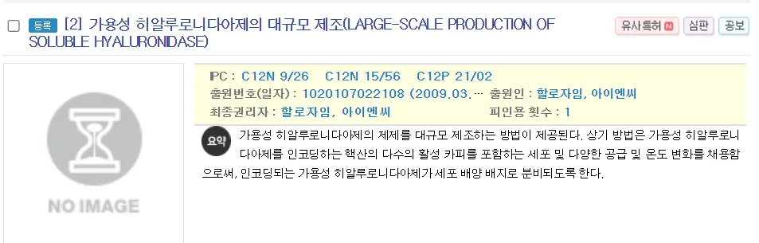
2.3.1 할로자임 히알루로니다제 기술 관련 글로벌 특허 장벽
예시인 상기 특허는 인간 히알루로니다아제의 대규모 제조 방법에 대한 특허 등록으로 경쟁사의 히알루로니다아제 제조 기술 개발에 대한 제조 측면의 진입 장벽 구축하는 목적이다. PCT 국제 특허 출원 (2009.03/06)하였으며 그 주요 내용을 살펴보면, 가용성 rHuPH20의 제조 및 정제 방법에 대해 기술하고 있다. 따라서 할로자임을 제외한 타 경쟁사가 rHuPH20를 대규모 제조 및 정제하기 위해서는 해당 특허에 저촉되게 된다.
<그림 17> 할로자임 용도 특허 예시 – PH20
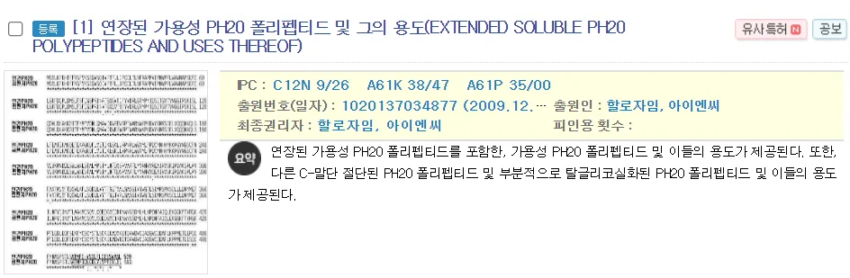
할로자임은 또한 PH20의 용도에 대한 특허도 별도로 출원하였는데 PCT 국제 특허 출원(2009.12/09)를 참고하면 해당 내용을 살펴볼 수 있다. 해당 특허는 연장된 가용성 PH20 및 다른 가용성 PH20의 치료 방법, 용도 및 병용요법에 대해 기술하고 있다. 따라서 할로자임이 사용하는 히알루로니다제에 대한 승인된 치료 용도인 다른 치료제의 흡수 및 분산을 증가시키기 위한 보조제로서 용도, 피하주입 (피하 유체 투여)를 위한 용도에 대해서도 특허 출원들을 함으로써 치료를 위한 바이오 플랫폼 용도로의 타 기업들의 자체적인 히알루로니다제의 활용을 제지한다.
<그림 18> 할로자임 제형 특허 예시
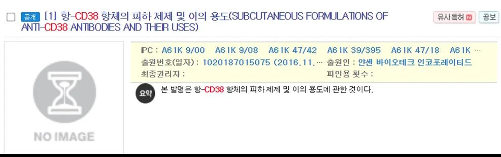
마지막으로 할로자임은 제조, 용도 특허에 이어 제형에 대한 특허도 등록하였다.
PCT 국제 특허 출원(2016.11/01)을 참고하면 해당 특허는 다잘렉스(IV)를 개발한 ‘얀센’사와 할로자임의 특허인데, 할로자임의 ENHANZE 기술을 적용한 SC 제형 특허로 바이오시밀러 업체들과의 차별점 부각 및 SC 제형 진입 차단하는 역할을 한다.
2.3.2. 다수 파이프라인 공동 개발 경험 기반 노하우
할로자임은 이러한 특허 관련 전문 지식들에 기반하여 2014년 이후 ENHANZE 기술을 활용한 파트너사와의 공동 개발 출원을 지속적으로 시행하고 있다. 예시로 이러한 노력은 임상 1/2/3상과 상용화 단계에서 글로벌 빅파마 11개 파트너에게 자체 독점 약물과 결합하여 정맥주사 제품에서 피하주사 제품으로 카테고리를 전환할 수 있는 노하우와 지식을 제공하는 것으로 확인할 수 있다.
또한 할로자임은 사내 생명공학 분야 과학자, 의약품 제형 전문가, CMC 제조 및 심도 있는 규제 전문가들로 구성된 팀을 통해 파트너사를 지원하고 있다. 이는 다양한 전문성을 가진 팀원들이 협업하여 파트너사의 요구에 부응하고, ENHANZE 기술을 효과적으로 적용할 수 있도록 지원하는 구조를 갖추고 있음을 의미한다. 따라서 할로자임의 두번째 핵심 역량인 독보적 규제 지식과 노하우를 통해 할로자임은 파트너사들과의 협력을 강화하고, 의료 분야에서의 혁신을 선도하는 역할을 수행하고 있다고 할 수 있다.
<그림 19> 할로자임 글로벌 빅파마 파트너사 <그림 20> 전문 인적 자원 현황
출처: (좌) 할로자임 2023 IR 자료 (우) Halozyme Therapeutics Number of Employees 2006-2022 - Stock Analysis
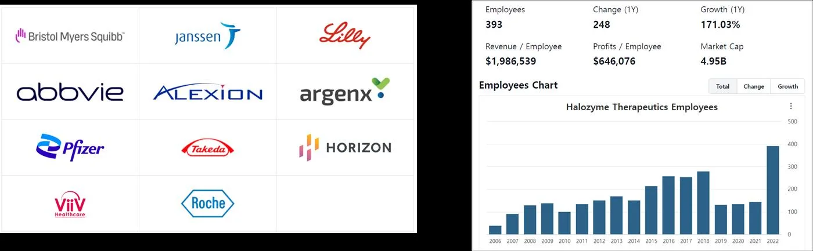
<그림 21> 히알루로니다제, Antibody sc 제형 특허 네트워크 분석
출처: 위즈도메인 특허 자료 기준 Gephi 프로그램 활용 직접 작성
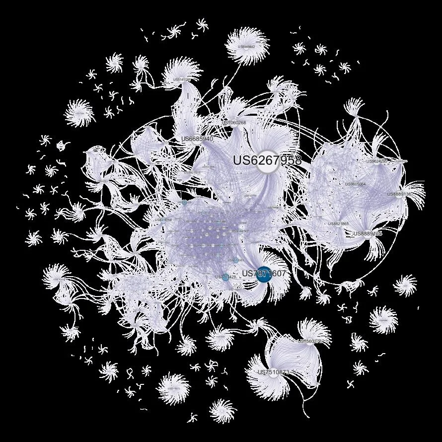
<그림 22> 히알루로니다제, Antibody sc 제형 특허 네트워크 분석(확대)
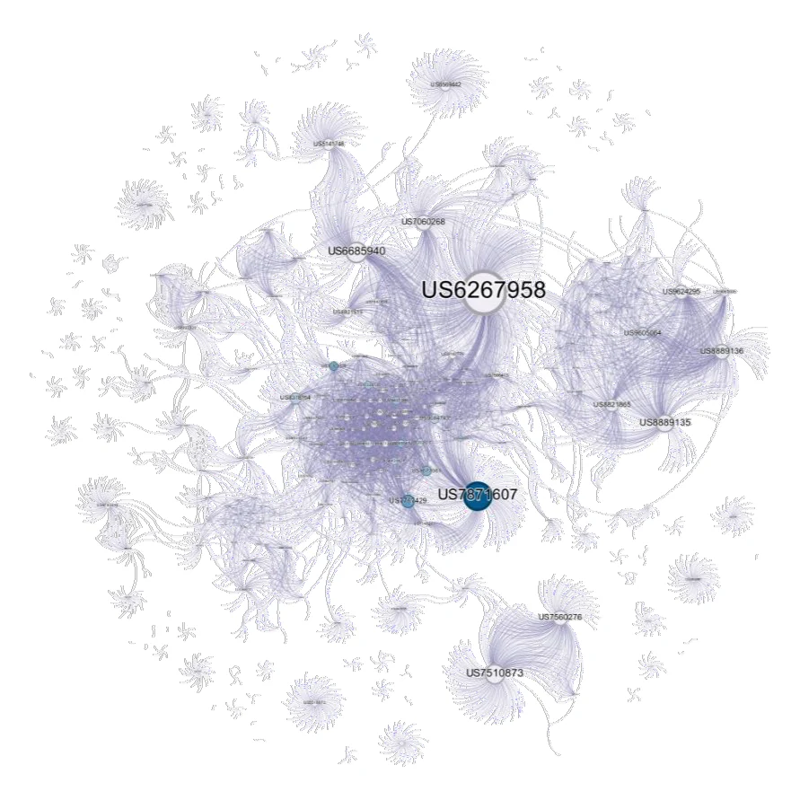
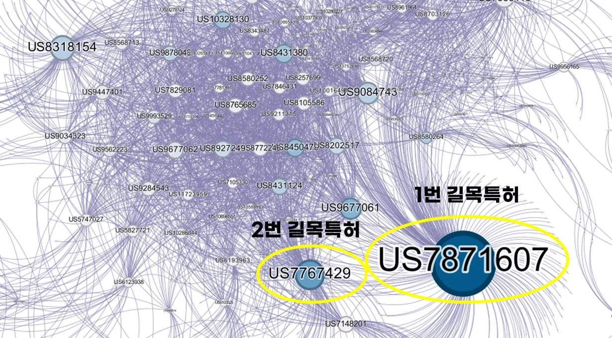
2.3.3 핵심 역량 (2) 종합: 바이오 플랫폼 특허 간 매개 중심성 분석 결과
할로자임 특허 네트워크 분석을 통해 (검색 식: (TAC=(ANTIBODY)) AND TAF=(HYALURONAN OR HYALURONIDASE), 총 해당 특허 417개/원 크기: 피인용 수/색: Betweenness Centrality) 할로자임의 피인용 수가 전체 중 2번째로 높으며 특히 Betweenness Centrality가 굉장히 높은 것을 확인할 수 있다. 1번 길목특허의 경우 ‘가용성 글리코사미노글리칸아제 및 가용성 글리코사미노글리칸아제의 제조 및 사용 방법’이며, 2번 길목특허의 경우 은 AA 등급의 18개 특허 중 10개를 차지하고 있는 ‘가용성 히알루로니다제 당단백질 (SHASEGP), 이의 제조 방법, 용도 및 이를 포함하는 약제학적 조성물’이다.
특허 네트워크 분석을 통하여 할로자임의 해당 특허들의 경우 Betweenness Centrality가 높음을 네트워크 분석 시 시각적으로 확인할 수 있으며, 피하주사 항체, 더 자세하게는 항체와 히알루로니다아제 모두를 포함하는 특허를 출원하기 위해서는 할로자임의 특허 인용 없이는 출원이 어려운 구조임을 알 수 있다. 즉 할로자임의 독보적 특허 관련 역량은 히알루로니다제 시장 진입을 위해서는 할로자임의 특허를 거쳐야만 하므로 신규 경쟁자 진입 차단의 기능을 하며, 해당 기술을 사용하고자 하는 제약사의 경우, 할로자임과의 계약을 우선 순위로 검토하도록 하는 요인이 된다는 점에서 핵심 역량으로서 큰 가치를 가진다고 할 수 있다.
3.1 이론적 배경: 아키텍처 이론
후지모토 교수의 Architectural Positioning 분석틀을 적용하여, 할로자임의 바이오 플랫폼 혁신 전략을 분석하고자 한다. 아키텍처 이론은 제품 기능과 구성 요소 간의 관계에 따라 “모듈러”와 “인테그럴” 유형으로 분류된다. 제품 기능과 구성 요소 간의 일대일 대응 관계가 모듈러 아키텍처, 다대다 대응 관계가 인테그럴 아키텍처이다. 또한 인터페이스의 개방도를 중심으로도 볼 수 있는데 개방도가 높으면 Open, 폐쇄적인 기술의 경우 Closed 아키텍처의 특성을 가진다.
<그림 23> 아키텍처 이론 타입 별 설명
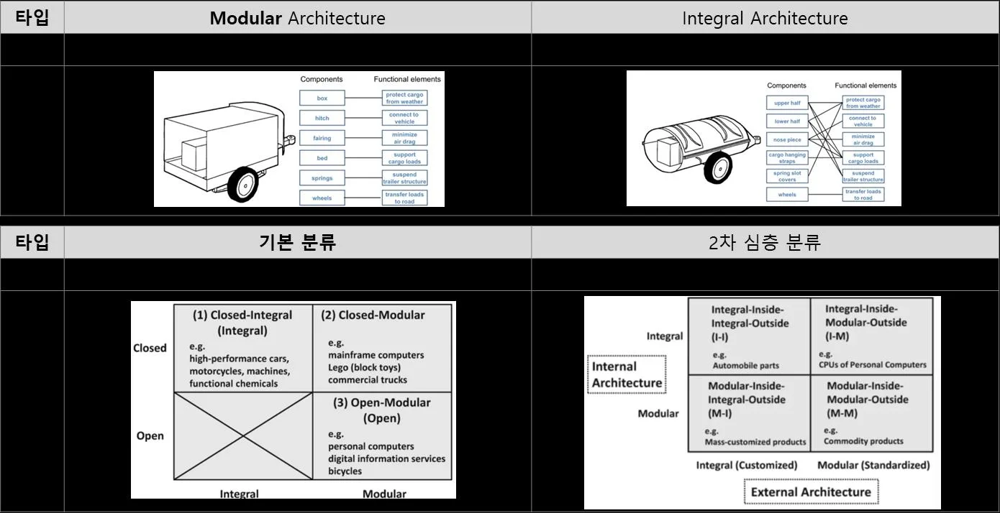
<그림 24> 아키텍처 이론 2차 심층 분류
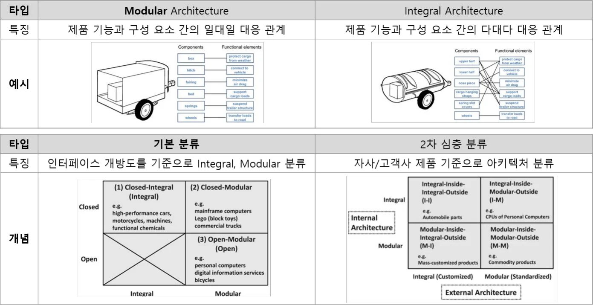
해당 연구에서는 할로자임의 혁신 전략을 분석하기 위해 아키텍처 이론 중에서도 2차 심층 분류인 기업 내/외부적인 아키텍처 포지셔닝 분석틀을 활용한다.
해당 분석틀을 통해 기업과 산업의 아키텍처적인 특성을 인터그럴/모듈러 및 아웃사이드/인사이드를 기준으로 총 4가지로 분류할 수 있는데 할로자임 혁신 기술의 기업 내부적인 특성과 외부적인 특성에 대한 분석을 통하여 그 독자성과 확장성에 대해 분석하고자 한다.
<그림 25> 바이오 산업 기준 아키텍처 유형별 분류 (예시)
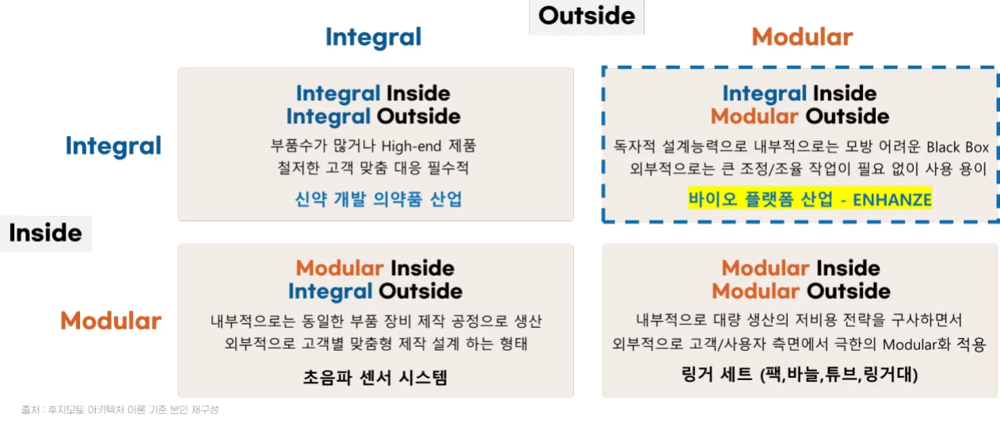
4가지 유형의 아키텍처 분류 중 가장 강력한 힘을 가지는 유형은 Integral Inside, Modular Outside이다. 그 이유로는 독자적 설계능력으로 내부적으로는 모방 어려운 Black Box를 가지고 있으므로 경쟁사들이 쉽게 따라오지 못하지만, 외부적으로는 고객별 큰 조정이나 조율 작업 필요 없이 사용이 용이하기 때문에 확장성이 높기 때문이다. 할로자임의 ENHANZE 바이오 플랫폼 아키텍처 유형이 바로 해당 분류에 속한다.
3.2 혁신 배경: 제약사 문제 상황 - 특허 만료 갱신의 어려움
신규 의약품 개발에 소요되는 물적 및 시간적 자원이 상당히 크지만 기본적으로 의약품의 특허는 출원일로부터 20년 동안 보장되는 한계를 가지고 있다. 특히, 2000년대 이후 출시된 글로벌 메가 의약품들의 특허가 다수 만료되면서 바이오 시장은 신규 경쟁 체제가 강화되는 추세이다. 이로 인해 제약사들이 기존의 시장 점유율을 유지하기 위해서는 "추가적인 가치"나 "혁신적인 특허 연장 전략"을 확보해야만 하는 필요성이 대두되고 있다.
<그림 26> 의약품 상품 주기
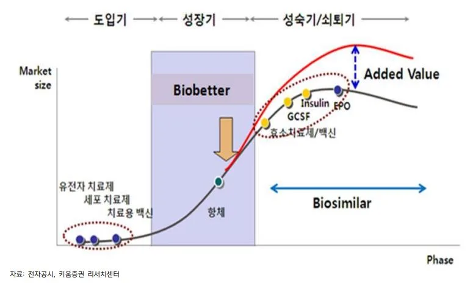
이런 위기 상황을 바이오 의약품의 상품 주기를 통해 살펴보면 초기 도입기에서 바이오베터가 나오는 성장기를 거쳐서 특허가 만료되며 더 저렴한 경쟁 복제 약품인 바이오 시밀러들이 많이 출시되어 경쟁력을 상실하는 성숙기/쇠퇴기까지 이어진다. 성숙기 및 쇠퇴기에 속한 의약품의 경우에는 낮은 가격의 바이오시밀러 제품이 시장에 대거 진입하기 때문에 기존 제약사들은 저렴한 대안에 의한 경쟁으로부터 생존과 성장을 위한 새로운 전략을 모색해야 한다. 특허를 갱신하지 않으면 신규로 출시되는 바이오시밀러 의약품에 시장 점유율 뺏기는 리스크가 발생하고, 그렇다고 신규로 특허를 갱신하기에는 천문학적인 추가 자원의 투입이 요구된다. 이러한 상황에서 특허 만료 후에도 경쟁력을 유지하려면 다양한 혁신 전략이 필요한데, 할로자임은 혁신적인 가치 창출과 함께 기존 의약품의 효율적인 특허 연장 전략을 제공한다.
3.3 혁신 전략: IIMO(Integral Inside Modular Outside) 아키텍처 바이오 플랫폼
파트너십 전략
<그림 27> 할로자임 인핸즈 공동개발 파트너십 예시
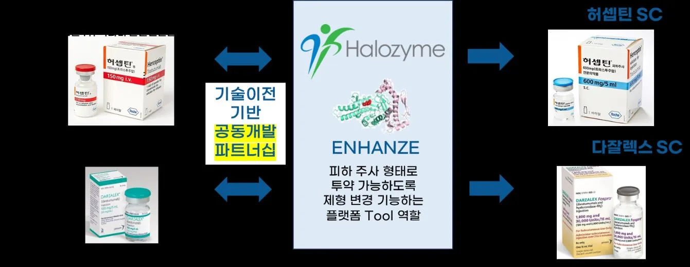
할로자임의 인핸즈가 하는 주요 역할을 살펴보면, 기존 의약품을 기반으로 하여 + IIMO 유형의 ENHANZE 플랫폼을 결합하여 SC 제형으로 피하 주사 투약이 가능한 동일한 효능의 신규 의약품을 개발하는 것이다. 신규 “효능”을 가진 의약품을 개발하기 위해 리스크를 감수하던 기존 바이오 기업 개발 방식 대신 효능이 입증된 기존 의약품에 할로자임에서 특허 받은 “SC 제형 변경” 물질인 ENHANZE 결합하는 “모듈러 아키텍처” 형태의 바이오 플랫폼 판매 및 공동개발 파트너십 비즈니스 전략을 추진한다.
인핸즈 기술은 히알루로니다제 기술을 기반으로 정맥 주사로만 투여가 가능한 약품들을 피하 주사로 변형해주는 플랫폼의 역할을 한다. 따라서 인핸즈를 통해서 제약 회사들은 기존에 보유하고 있던 약에 SC 제형을 접합한 신규 제품 개발로 신규 특허를 출원할 수 있다. 이를 통해서 경쟁력을 잃는 쇠퇴기에 추가적인 진입 장벽을 설정하고 차별적인 상품 경쟁력 확보하며 입지를 개선할 수 있다. 또한 SC 제형의 접합으로 투약 부작용을 낮추고 약물 전달 용이성을 증대하며 상품 본연의 가치를 향상할 수 있다는 점에서 고객 가치를 가진다.
<그림 27> 글로벌 임상 단계별 현황
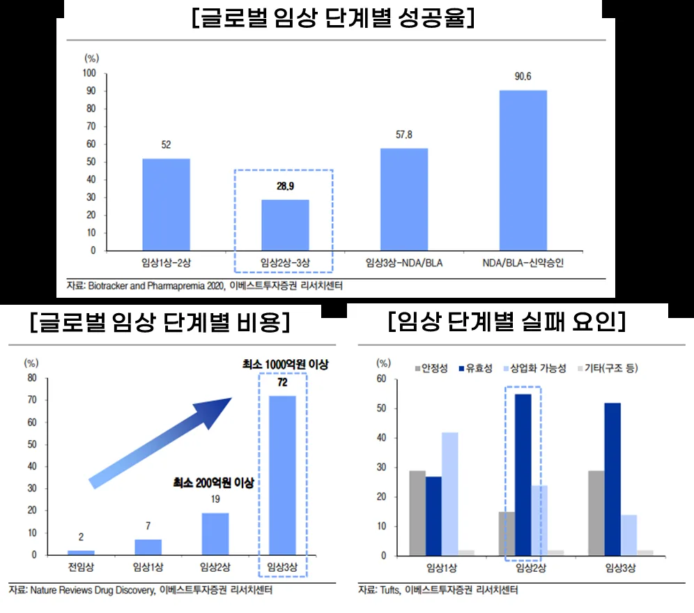
또한 모듈러 아웃사이드 유형이기 때문에 다수의 바이오 기업들과 계약을 맺을 수 있다. 예시로 로슈사에서 보유하고 있는 허셉틴 IV에 인핸즈 기술을 접합하여 허셉틴 SC를 개발하고, 얀센사의 베스트 셀러인 다잘렉스 IV에 할로자임의 인핸즈 기술을 적용하여 다잘렉스 SC를 개발하는 방식의 비즈니스 모델을 가진다.
3.4 혁신 결과
3.4.1. 혁신 결과 (1) 신규 의약품 개발 실패 리스크 및 비용 최소화
기존 글로벌 임상 진행 방식의 경우로 보았을 때, 임상 2상에서 3상으로 단계를 통과하는 비율은 30%이하이나, 그 비용은 최소 천억원 이상이 소요된다. 그만큼 바이오 기업들은 신규 의약품을 개발하고 출시함에 있어서 높은 리스크와 비용을 소요해야 한다. 그리고 임상의 단계별 가장 큰 실패 요인은 약품의 유효성이 입증하지 못하는 것이다.
할로자임 ENHANZE 비즈니스 모델이 큰 강점을 가지는 이유는 이러한 임상 실패 리스크와 원인에 있다. 인핸즈의 IIMO 아키텍처 유형은 이미 임상에 성공하여 글로벌 판매되고 있는 의약품들을 기준으로 원료 의약품(API) 변경 없이 SC 제형으로의 변환만을 위주로 “모듈형 바이오 플랫폼”을 접목하여 신규 임상을 진행하는 형식이다. 따라서 유효성 부족 및 부작용에 따른 임상 실패의 리스크가 매우 낮으므로 단계별로 투자 비용을 절감할 수 있다.
또한 할로자임 기술을 적용한 의약품은 효능이 입증된 약품을 기준으로 하기 때문에 “바이오 시밀러(베터)”로 분류될 수 있다. 통상적인 의약품의 경우, 신규 발견부터 최종 승인까지 평균 15년 소요되는 것에 반해 바이오 시밀러(베터) 기준을 적용하면 유럽과 미국 기준 임상 2상없이 임상 1/3상만 만족할 경우 출시가 가능하다. 따라서 효능적인 접근뿐 아니라 제도적으로도 단기간 신제품 출시 가능한 플랫폼을 제공한다.
예시를 들어, 앞서 언급한 로슈사의 허셉틴 사례의 경우, 오리지널 허셉틴 물질 특허 만료 이후 기존 허셉틴에 대해서 적응증을 추가하며 특허 기간을 늘리는 전략이 아니라, 할로자임과의 라이선스 계약을 통하여 피하주사 방식의 허셉틴 SC 제형인 Herceptin HylectaTM을 신규 출시하였다. Herceptin Hylecta는 환자에게 바로 주입이 가능한 ‘Ready-to-use’ 제형으로 2~5분내 주사기를 통해 주입이 가능하다. 이처럼 할로자임 플랫폼 적용으로 제약사 입장에서는 개발 비용은 낮지만 고객 소비 효용과 고객 만족도는 더 높은 신상품을 개발할 수 있는 것이다. 할로자임은 IIMO 아키텍처 혁신을 통해서 인핸즈로 대표되는 바이오 플랫폼 비즈니스를 지속적으로 확장하고 있다. 할로자임은 로슈 社로부터만 현재까지 3천억원 이상의 로열티 수익을 기록했으며, 해당 기술을 타 파이프라인으로 확장할 때마다 평균 500억 이상 추가 수익을 실현하고 있다.
3.4.2. 혁신 결과 (2) 파트너십을 통한 비즈니스 지속 확장성 확보
할로자임의 아키텍처 혁신을 통한 플랫폼 파트너십 비즈니스의 또다른 가치는, 항암제 포함 항체치료제 타입 별로 지속적인 신규 Licensing-Out 계약이 가능하기 때문이다. 할로자임의 경우 마켓 리더로서 종류 별 “독점 계약”을 통해 기술 사업화를 진행하고 있으나, SC 제형 도입 가능 치료제의 종류 및 파이프라인 다양하고 지속적으로 신약이 개발되기 때문에 비즈니스의 꾸준한 확장이 가능하다.
<표 1> 글로벌 빅파마 10위 내 할로자임과의 라이센싱 아웃 계약 현황
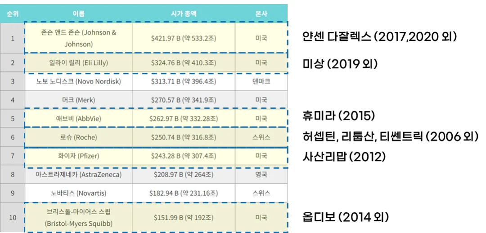
<표 2> 치료 영역 별 계약 현황

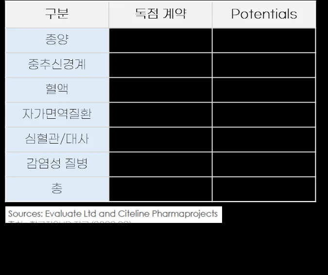
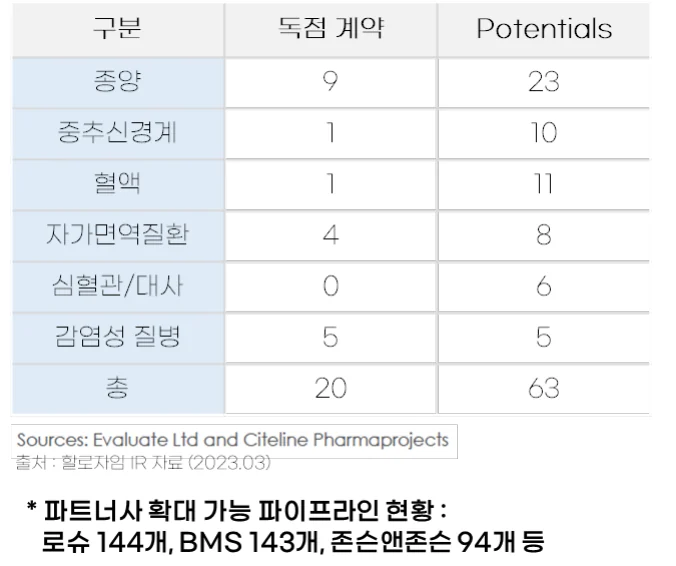
실 사례로 설명하자면 상기 표에서 볼 수 있듯이, 할로자임은 꾸준하게 빅 파마들과 새로운 공급 계약을 맺고 있으며 파이프라인을 지속적으로 확장하고 있다. 다만 글로벌 빅파마들의 경우 기업마다 자체적으로 보유하고 있는 파이프라인의 종류가 다양하고 많은데 로슈 144개, BMS 143개, 존슨앤존슨 94개 등 각 파이프라인 별로 바이오 플랫폼 접합을 통한 신규 의약품 개발 검토가 가능하므로 독점적 계약임에도 불구하고 높은 확장성을 가진다.
4.1 혁신 배경: 기존 바이오 기업 문제 – R&D 비용으로 적자 증가
기존 바이오 기업들의 연구 및 개발(R&D) 비용으로 인한 적자가 증가하고 있다. 이들 바이오제약 기업은 주로 신규 의약품의 개발을 통해 의약품 판매 매출을 얻고 있으나, 이러한 신약 개발은 대규모 자원 투자가 필수적으로 요구되기 때문이다. 평균적으로 신약 개발에는 약 15년이 소요되며, 약 1조원 이상의 투자가 필요한 것이 일반적인 패턴이다.
<그림 29> 글로벌 의약품 개발 프로세스
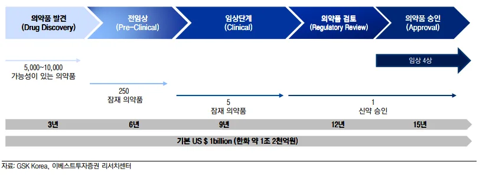
이러한 산업 특성으로 인해, 글로벌 제약바이오 기업 대다수가 영업 이익률이 낮고 적자 재무 상태에 놓여 있는 실정이다. 예시로, 미국 바이오제약 상장 기업 중에서도 S&P 600 기준으로는 약 30%가 적자 재무 상태에 있으며, 나스닥에 상장된 기업 중에서는 약 80%가 적자로 기록되고 있다. 이런 재무적 위기 상황은 바이오 기업들이 지속적이고 긴 기간 동안의 연구 및 개발에 큰 자금을 투입해야 하는 동시에, 신약의 개발 성공 여부에 따라 수익을 기대해야 하는 어려운 환경에서 비롯된 결과이다. 할로자임의 경우에도, 이와 마찬가지로 재무적인 위기 상황을 겪었으며 이를 극복하기 위한 혁신 전략을 펼친다.
<그림 30> 미국 제약 바이오 섹터 적자 기업 비율
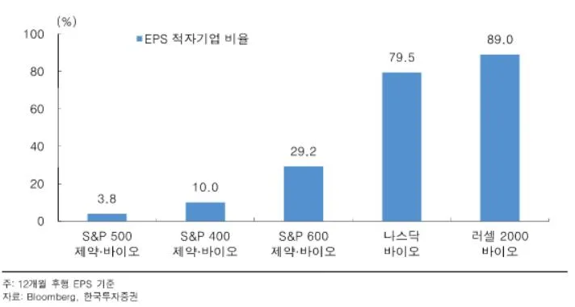
<그림 31> 할로자임 재무 현황 (2014-2019)

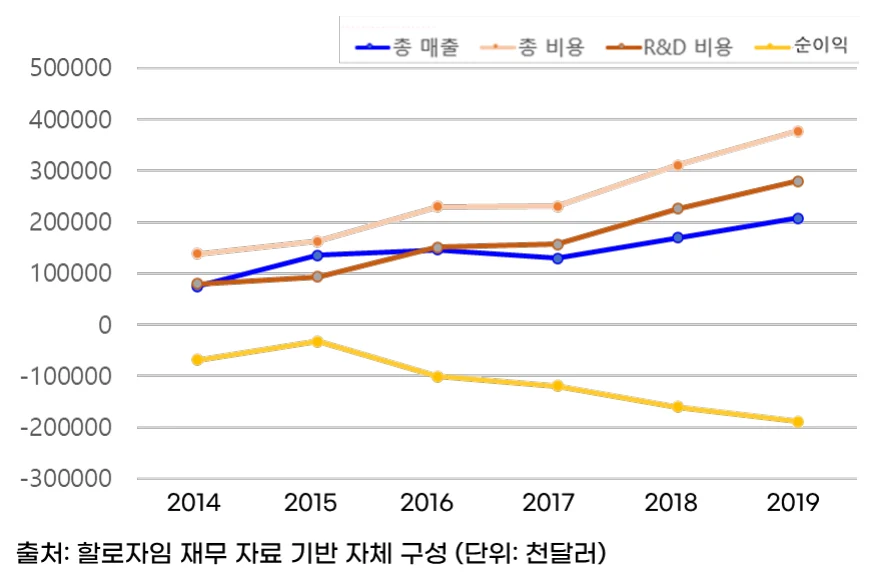
4.2 혁신 전략: 기술 수출에 집중한 로열티 중심 수익 모델 수립
4.2.1. 선택과 집중 전략 – 자체 의약품 개발 사업 중단
할로자임의 경우에도 많은 제약사들에서 겪고 있는 재무적 어려움을 동일하게 경험하였다. 2014년부터 2019년까지 할로자임은 지속적인 연구 및 개발(R&D) 비용 증가로 인해 영업 이익 적자 위기에 직면했다. 특히, 2019년까지는 기존 제품인 ENHANZE를 제외하고는 신규 개발 중인 항암제로 인한 수익이 전무한 실정이었다. 이러한 위기 상황 속에서 회사의 경영진은 단호한 경영적 혁신을 선언하였다. 기업의 핵심 비즈니스 영역인 인핸즈의 기술수출에 집중하고 비효율적인 부분을 정리함으로써, ENHANZE 기술을 더욱 강화하고 시장에서의 경쟁력을 향상시키려는 강력한 의지를 반영한 혁신 전략을 펼쳤다.
따라서 2019년 11월, 할로자임은 10년 이상의 투자를 하고 있던 췌장암 항암제 PEGPH20의 자체 개발을 중단하는 선언을 하였다. 이후, 전략적인 조직 개편을 통해 주력 제품으로 ENHANZE 약물 전달 기술에만 집중하게 되었다. 따라서 PEGPH20 개발 조직과 종양학 사업은 폐쇄되며, 이에 따라 인력의 55% (160명) 이상이 감축되었다. 항암제 관련 R&D 비용 투자도 중단되었으며, 2020년 기준으로는 약 1500억원의 관련 비용이 감축되었다.
4.2.2. 플랫폼 사업 마일스톤/로열티 수익 모델 집중 전략
또한 할로자임은 기술 수출에 집중하는 혁신 전략을 펼치며 플랫폼 파트너십 기반 마일스톤 및 로열티 수익 모델을 구축하였다. 바이오 플랫폼 기술 수출으로 시기 및 단계별 순수익률을 극대화할 수 있는 혁신적 비즈니스 수익 모델을 가지고 있는데 기술 수출이란, 축적된 고도의 기술을 다른 쪽에 이행함으로써 이루어지는 기술 개발을 의미한다. 이전방법은 라이센싱 협정, 특허의 사용 허가, 경영계약 등 다양하나 바이오 기업의 경우 주로 라이센싱 계약을 통한 기술 이전을 진행한다. 할로자임의 인핸즈 기술과 같이 핵심적인 기술이면서 적용이 쉬운 경우 지속적인 라이센싱 아웃 계약이 가능하다.
할로자임은 수익 극대화를 목표로 자체 개발 비용을 감축하고, 대신 타사 의약품에 플랫폼 기술을 수출하는 형태의 수익 모델을 구축하고 있는데 이 모델은 다음과 같은 특징을 가지고 있다. 기술수출의 경우 통상적으로 초기 계약금으로 총 계약금액에 5~7%를 수령하는데 최근에는 “반환 의무가 없는” 계약금 사례가 대부분이다. 따라서 1조원 규모의 기술 수출(라이선스-아웃)이라고 할 경우 반환 의무 없는 계약금만으로 500억~700억원 수익이 확보 가능하다. 또한 임상시험 성공에 따른 마일스톤(Crinical trial milestone) 단계별로 추가 수령하는 수익 구조로 이루어지는데 임상 1상의 경우 총 금액 대비 약 10%, 임상2상의 경우 15~20%, 임상3상의 경우 20~25% 수령하는 것이 관행적이다. 마지막으로, 기술 수출 후 해당 제품의 시판이 성공할 경우, 할로자임은 매출에 따라 추가적인 금액을 수령한다. 이는 약 40~50% 정도의 비율로 구성되어 있으며, 시장에서의 성공에 따라 더 많은 수익을 창출할 수 있게 된다.
<그림 32> 로열티 중심 수익 모델 예시
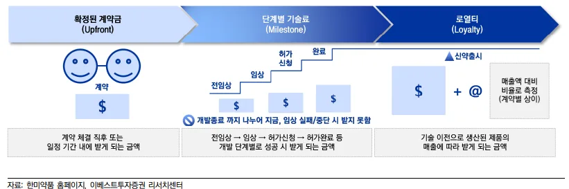
할로자임은 글로벌 빅파마 고객과의 다양한 라이센싱 계약을 통해 진행 단계별 지속적인 수입원을 확보한다. 또한 매출 기준 로열티를 추가 획득하는 수익 모델을 가지고 있는데, 2006년부터 2022년까지 10곳의 글로벌 제약사와 약 60여개 물질에 대한 라이선스 계약을 체결했으며 총 계약 규모는 약 7조원으로 추정된다. 해당 기술이전 비즈니스 모델로 2027년 기준 1조 3천억 이상의 로열티 수익이 예상되는데 2027년 기준 Wave 1,2,3,4 ENHANZE 제품의 수익이 발생되기 때문이다. Wave 3 이후 Wave 4 파이프 라인의 경우, 임상 1상 단계에 있으므로 향후 추가적 수입원 역할을 수행할 것이다. 또한 2031년 기준으로는 Wave 5 제품들의 추가적인 수익이 기대된다. 해당 수익 구조는 추가 투자에 따른 수익이 아니라 고객사의 임상 성과에 따라 이루어지므로 최소 투자 대비 최고의 수익률을 낼 수 있는 수익 모델이다. 실제로 2021년 기준 할로자임의 순수익률은 90%에 임박하였다.
4.3 혁신 결과: R&D 비용 최소화 및 지속적 수입원 확보에 따른 순이익 극대화
할로자임은 이러한 수익 모델 혁신을 통하여 재무적으로도 혁신적인 성과를 거두었다. 실제로, 할로자임의 재무적 성과 추이를 보면, 2019년 이후에는 자체 개발 신규 항암제를 제외한 의약품 투자 중단으로 R&D 비용이 감소하거나 유지되었지만 파트너사로부터 얻는 바이오 플랫폼 기술인 ENHANZE를 통한 수익은 계약금, 단계별 로열티 등으로 인해 매출과 순이익은 극대화되는 양상을 확인할 수 있다.
<그림 33> 할로자임 재무적 개선 추이
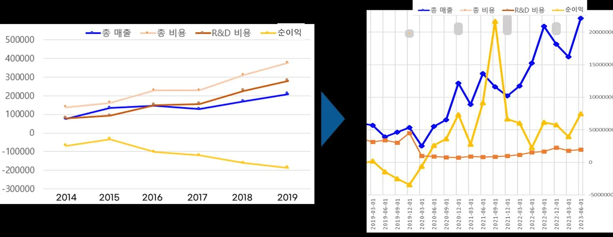
글로벌 빅파마 고객과의 L/O(라이선스 아웃) 계약을 통해 할로자임은 단계별로 지속적인 수입원을 확보하고, 매출 기준으로 로열티를 추가로 획득하였다. 2006년부터 현재까지 10곳과의 총 계약 규모는 7조원 수준이며, 60여개의 물질에 대한 라이선스 계약을 체결했다. 예를 들어, 로슈 사로부터 현재까지 3천억원 이상의 로열티 수익을 확보하였으며, 신규 파이프라인 마다 5천억 추가 수익이 예상되고 있다.
2027년 기준으로는 1조 3천억 이상의 로열티 수익이 예상되어 있으며, 이는 2027년을 기점으로 Wave 1,2,3,4 전반에 걸친 ENHANZE 파트너십 공동 개발 제품으로부터의 지속적인 수익이 발생할 것으로 예측되고 있다.
더불어, 2031년에는 Wave 5로부터 신규 수익이 예상되어 혁신적인 성과를 더욱 확장할 것으로 전망되고 있다.
<그림 34> 할로자임 로열티 수익 성장 추이
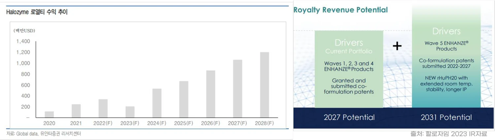
<그림 35> 오픈 이노베이션 모델
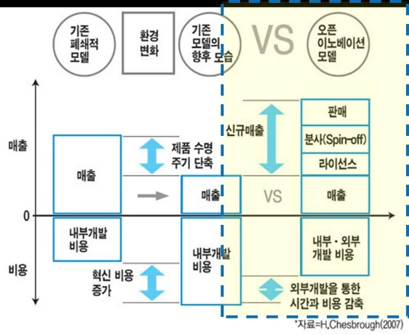
5.1 이론적 배경: 오픈 이노베이션 이론
오픈 이노베이션은 미국 버클리 대학의 헬리 체스브로 (Henry Chesbrough) 교수가 처음 제시한 개념으로서 “기업의 혁신을 위해 필요한 기술과 아이디어 개발에 “외부 자원”을 활용 새로운 제품이나 서비스를 만드는 것”이다. 해당 전략의 특성으로는, 회사 고유의 영역에 자체 연구개발 역량을 집중하면서 추가 혁신 역량을 위해 외부의 기술을 활용하여 연구개발의 부담을 줄이고 성과를 극대화하는 것이다. 최근 들어 바이오 제약 부문에서 이러한 오픈 이노베이션 전략이 활성화되는 추세인데, 대형 제약사의 경우 지분 투자로 신약 개발 리스크 최소화하며 신약 파이프라인의 권리를 확보할 수 있다. 한편 바이오 벤처 기업들의 경우에도 대형 제약사들과의 협력을 통해 그들의 투자 자금으로 기업의 운영 비용을 해결하고 R&D에 집중함으로써 효과적으로 개발을 추진할 수 있다.
<그림 36> 인핸즈 기존 상품적 가치
5.2 혁신 배경: 할로자임 메인 제품인 SC 제형 의약품 고객 만족 한계점 존재
할로자임은 링거 제형의 주사에 인핸즈 기술을 접목하여 피하주사 제형으로 투약 가능하도록 하는 특장점을 가지지만, 그럼에도 불구하고 여전히 약물 투입 안전성 관점에서의 자가 투약의 한계가 존재하였다. 정맥 주사 대비 피하주사로 짧은 시간 내 투여 가능하다는 장점이 있으나, 일정 시간 동안 적절한 양을 주입해야 하기 때문에 자가 투약이 어려웠다. 따라서 짧은 시간 투약을 위해서라도 의료인의 도움이 필요할 경우 병원을 방문해야 하기 때문에 이로 인한 비용 및 시간의 소요가 필수적이었다. 이런 문제점을 해결하고, SC 제형 변환 기술인 할로자임 ENHANZE 기술의 필요성과 가치 증대를 위해서는 링거로 투약하는 IV 제형 기존 의약품과의 명확한 고객 가치 차별화 전략이 필요하였다. 즉 피하 주사 의약품을 스스로 투약하기 용이하도록 함으로써 편의성을 향상시키고 비용을 절감할 수 있는 전략의 필요성이 대두되었다.
5.3 혁신 전략: 글로벌 자동주사기 1위 기업 인수를 통한 가치 향상 전략
할로자임은, 회사 고유의 영역에 자체 연구개발 역량을 집중하면서 추가 혁신 역량을 위해 외부의 기술을 활용하여 연구개발의 부담을 줄이고 성과를 극대화하는 오픈 이노베이션 전략을 미래 전략으로 적극 활용한다. 할로자임은 2022년 8월 기존의 핵심 역량인 SC 제형 변환 기술에서 한 단계 나아가서, 환자가 직접 투여 양을 조절하지 않아도 적정한 속도와 적정한 양으로 주입이 가능한 “＂ 회사를 인수함으로써 그의 역량을 흡수하는 오픈 이노베이션을 시행하였다.
할로자임이 인수한 회사는 동종 계열 최고의 자동 주사기 (Auto Injector) 플랫폼 기술 및 사업 역량 보유한 “안테라스 파마”인데 3개의 제품 라인업을 자체 개발 및 독자 보유한 기업이다. 총 9억 6,000만 달러(약 1조 2500억)를 지급하는 조건으로 최종 인수에 합의하였는데 할로자임의 기존 제품과 접합하여 폭넓은 Licensing-Out 기회를 확보하게 되었다. 할로자임의 기술과 안테라스 파마의 주사기의 결합으로 End User인 환자의 고객 경험 추가 향상으로 고객 가치(만족도) 증대 및 제품 경쟁력 강화에 기여하리라 기대된다.
<그림 37> 안타레스 파마 로고 및 주요 제품군
출처: 할로자임 및 안타레스 파마사 홈페이지 이미지 기반 직접 작성
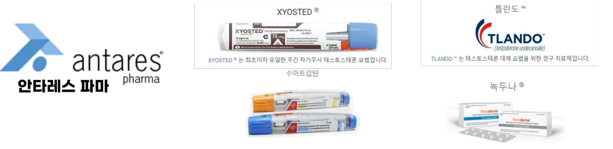
또한 기술적인 부분뿐만 아니라, 할로자임은 안타레스 파마의 영업 역량과 노하우로 추가적인 영업망을 창출하고, 특수의약품 영역으로까지 사업 영역을 확대하는 기회를 가진다. 결과적으로 신‧구 치료제들의 효과를 향상시킬 수 있는 혁신적인 솔루션 확보하며 개방형 혁신 및 흡수 역량을 통하여 통합적인 바이오 약물전달 플랫폼 기업으로서의 포지셔닝을 강화하는 전략을 펼친다.
5.4 혁신 결과: 시너지를 통한 제품 경쟁력 및 포지셔닝 강화
할로자임은 이런 오픈이노베이션 전략을 통한 안타레스 파마사의 인수를 통해 첫번째로 두 회사의 플랫폼 기술과 노하우의 시너지를 통해 파괴적인 고객 경험을 제공할 수 있는 신제품을 개발하였다. 인핸즈 기술을 통해 IV 제형의 의약품을 SC 제형으로 투약 가능한 의약품으로 변환한 뒤에 안타레스 파마사의 자동 주사 플랫폼 기술을 접목하여서 두 가지를 합한 자가 투약이 용이한 신규 자동 주사 의약품을 개발하였다. 현재 두 회사간의 기술력의 시너지에 기반하여 안타레스 파마사의 기존 3분이 소요되었던 자동 주사기를 30초까지 단축하는 임상을 진행하고 있다.
<그림 38> 할로자임과 안타레스 파마 시너지를 통한 제품 개선 현황
출처: 할로자임 및 안타레스 파마사 홈페이지 이미지 기반 직접 작성
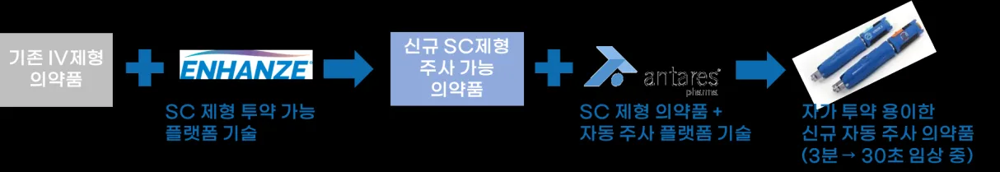
또한 이러한 협력의 결과물로서, 할로자임의 ENHANZE 기술과 자동 주사 플랫폼 기술 결합을 통한 신규 제품은 향상된 End User 경험을 제공하였으며 특수 의약품 영역으로의 사업 확대를 이룰 수 있도록 하였다. 그 결과 안타레스 파마를 인수한 당해년도인 2022년 기준 800만 유닛을 판매하는 파괴적인 성과를 거둘 수 있었다.
<그림 39> 안타레스 파마사 인수 기반 할로자임 자동 주사기 라인업
출처: 할로자임 2023 IR 자료
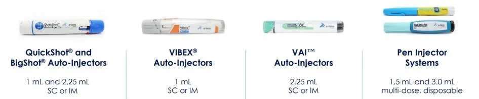
<그림 40> 할로자임 혁신 사례 요약
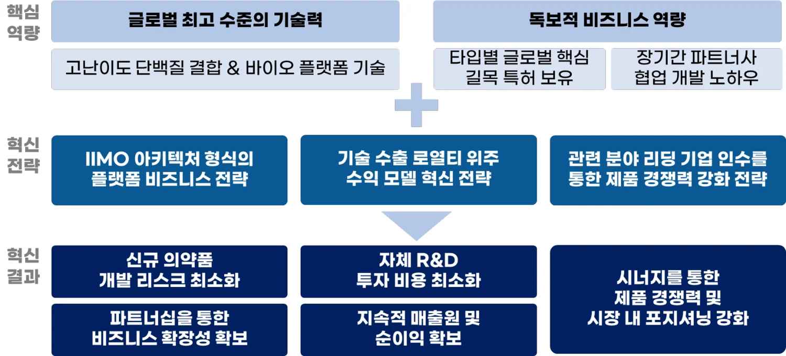
6.1 결론
Research Question 1인 할로자임 테라퓨틱스는 어떤 혁신으로, 세계 최초 & 최고의 바이오 플랫폼 기업이 되었는가에 대한 결론을 할로자임의 비즈니스 성공 전략을 핵심 역량 및 혁신 이론 기반으로 분석하고자 한다. 그를 위해서 할로자임의 혁신 사례를 전체적으로 요약하자면, 할로자임은 글로벌 최고 수준의 단백질 공학 기술력과 특허에 대한 독보적인 비즈니스 역량을 기반으로 바이오 플랫폼 기술을 신규 개발하여 블루오션 창출하고 플랫폼 기술을 기반으로 “IIMO 아키텍처” 형태로 높은 확장성 기반 지속적 계약 창출하였다는 것이다. 또한 “특허 장벽” 전략으로 타 경쟁사의 시장 유입을 막고 시장 독보적 지위를 오랜 시간 유지하였으며 “기술 이전 로열티” 기반 혁신적 수익 모델 구축으로 단계별, 지속적 순수익 극대화 실현하는 비즈니스 모델을 가지고 있다. 할로자임은 이 외에도 자사의 핵심 역량을 기반으로 고객 만족을 강화할 수 있도록 시장 관점에서 연계된 “자동 주사기 업체＂를 인수하는 “개방형 혁신” 및 흡수 역량을 통하여 통합적 바이오 플랫폼 기업으로써 포지셔닝을 강화하였다.
6.2 시사점
할로자임의 혁신 전략 중에서도 가장 핵심은 IIMO 아키텍처 혁신을 가능하게 하는 고도의 기술력과 그를 기반으로 한 플랫폼 파트너십 비즈니스 전략에 있다고 생각한다. 제품 Function을 경쟁사 대비 차별화하여 모듈 형태의 제품을 시장에 공급하는 전략은 “고객 만족＂ “확장성＂을 기반으로 “글로벌 챔피언”을 만드는 주요한 요소가 된다. 모듈 제품의 Sub-function이 경쟁사 대비 탁월하게 우월할 경우, 할로자임의 경우 SC 제형으로 변경해주는 인핸즈 플랫폼 기술이 이에 해당할 수 있는데, 해당 모듈(플랫폼)을 미 채택 시 완제품의 Main-function 경쟁력이 약화되는 문제가 발생된다. 따라서 필수적으로 해당 모듈 제품을 채택하게 되는 구조가 발생하기 때문에 시장 경쟁력과 더불어 강력하고 안전한 비즈니스 모델을 확보할 수 있다.
<표 2> Integral Inside Modular Outside 아키텍처 유형의 예시
출처 : 각 제조사 홉페이지 이미지 활용 직접 작성
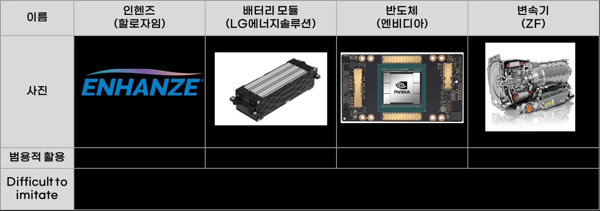
따라서 할로자임의 사례를 보았을 때, 차별화된 (인테그럴) 방식의 자체 핵심 기술 개발과 이를 범용적으로 활용할 수 있도록 하는 플랫폼 형태의 (모듈러) 제품을 설계 및 개발하는 것은 기업과 국가 기술 경쟁력 확보에 매우 중요하다. 또한 기술력과 플랫폼 제품의 개발에 덧붙여, 시장의 파이를 키울 수 있는 오픈 이노베이션과 함께 기업이 해당 시장에서의 독보적 위치를 견고히 하기 위해서는 Follower들의 시장 진입을 차단할 수 있는 전략의 마련 또한 필수적이다.
비단 할로자임과 같은 바이오 산업의 기업들뿐 아니라, 제조업을 포함한 모든 산업들의 경우에도 해당 할로자임의 사례는 혁신 기업으로 발돋움할 수 있는 좋은 참고 사례가 될 것이다. 특허 장벽을 세우고 기술과 품질을 고도화하고 비즈니스 모델 혁신을 통하여 시장 경쟁력을 높이고 탄탄한 수익 구조를 확보하는 식의 혁신을 통해 기업은 지속 가능한 성장을 이룰 수 있고 마켓 리더로서의 역할에 가까워질 수 있을 것이다.
Reference
• 포브스, 한국 경제원구원 제조업 영업 이익률 • 바이오 플랫폼 예시: 레고켐바이오 홈페이지 • 네이버증권, 할로자임 테라퓨틱스 • 바이오 의약품 산업 동향, 이베스트투자증권 리서치센터, 2022 제약 바이오 강하나 • 할로자임 IR 자료 (2023.03) • WHO, U.S. CDC, FDA, NIH Journals • 후지모토 아키텍처 이론 • K. Ulrich(1995): “The Role of Product Architecture in the Manufacturing Firm”, Research Policy, 24, pp.419-440 (아래)A Design-Information-Flow View of Industries, Firms, and Sites, 2018, • Non-Invasive Monitoring of Stromal Biophysics with Targeted Depletion of Hyaluronan in Pancreatic Ductal Adenocarcinoma, June 2019 • Biotracker and Pharmapremia 2020 • H.Chesbrough(2007) 오픈 이노베이션 전략 • Nature Reviews Drug Discovery • Evaluate Ltd and Citeline Pharmaprojects • GSK Korea • 한미약품 홈페이지 • 전자공시, 키움 리서치센터 • British journal of cancer 2013, 109, 1556-1561 • 할로자임 IR 자료 (2022.05) • PCT국제특허출원 43 본 문서는 현대자동차·기아의 정보자산으로 관련 법령에 의해 보호받습니다. • Global data, 유안타증권 리서치센터 • 현대자동차 홈페이지 카탈로그 및 H2 사이트 • 위즈 도메인 (특허 조사) • Gephi (특허 네트워크 분석) 활용 • Halozyme Therapeutics Number of Employees 2006-2022 - Stock Analysis 44 본 문서는 현대자동차·기아의 정보자산으로 관련 법령에 의해 보호받습니다.